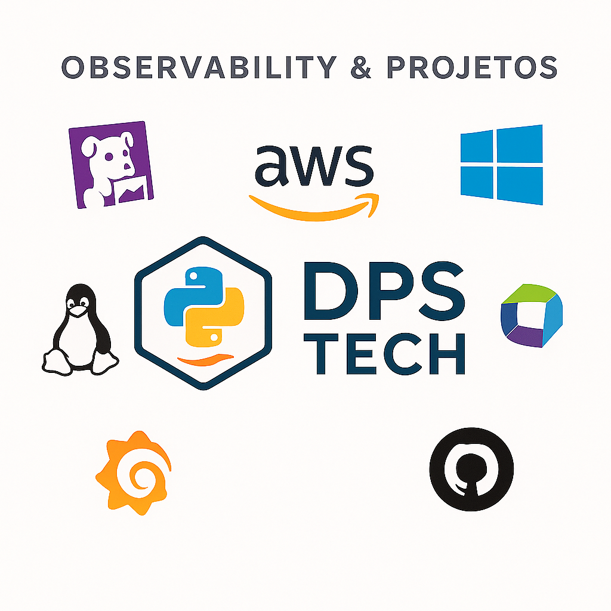

Domine a Observabilidade com Datadog, Dynatrace e Grafana — De Iniciante a Especialista
Desenvolvido por Danilo, especialista com 25 anos de experiência em música e 13 anos em tecnologia, este conteúdo transforma sua visão sobre observabilidade e performance.
Comece Agora — Aula Gratuita
Por que dominar Observabilidade é essencial para sua carreira em tecnologia
- Ganhe visibilidade completa dos seus sistemas, identificando problemas antes que afetem seus usuários.
- Configure alertas inteligentes para atuar proativamente e reduzir downtime.
- Aumente sua empregabilidade com habilidades requisitadas no mercado de DevOps e SRE.
- Aprenda com exemplos reais e cases práticos para acelerar sua curva de aprendizado.
“O curso do Danilo mudou minha forma de entender monitoramento. Passei a identificar falhas em minutos, e meu time ganhou muito mais eficiência.”
— João Silva, Engenheiro de Software